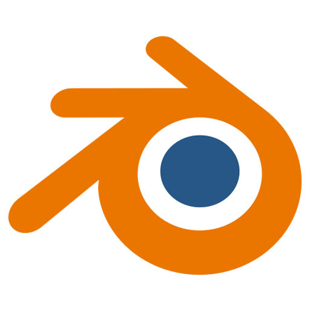
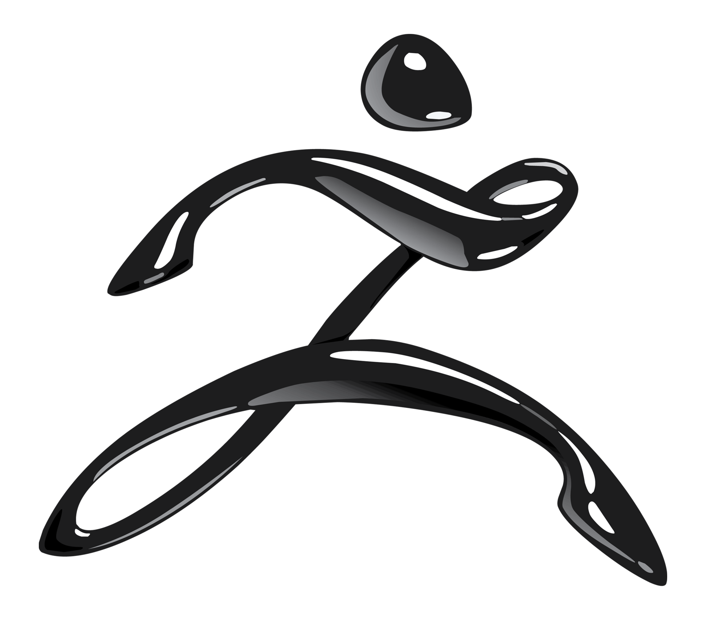

Toy Modeling
3D



This project is a high-fidelity 3D recreation of Skull Panda – The Imagination , a popular designer toy from POP MART. Using the physical toy figure as a direct reference, I focused on accurately reproducing its proportions, sculptural details, color schemes, and surface materials.